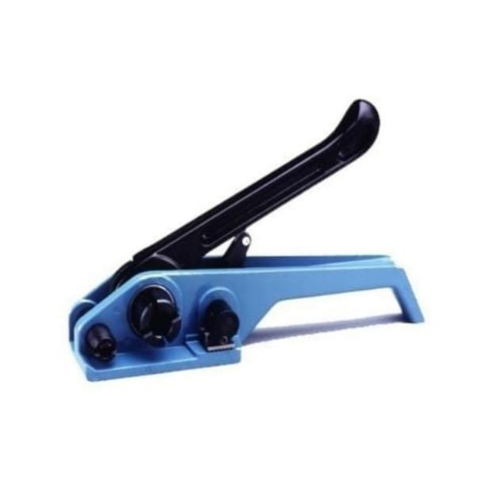

Fleje manual
Fleje plástico negro de polipropileno de alta resistencia para embalaje manual, cajas, pallets y aseguramiento de cargas.
Consultar disponibilidadComercializamos fleje manual, fleje semiautomático, hilo cebollero, hilo papero, hilo para rotoenfardadora, cintas agrícolas, film stretch y otros insumos para el sector agroindustrial, embalaje e industria.
Ver productosEn M&S Agro & Industria comercializamos insumos y productos destinados al agro, la industria y el embalaje.
Ofrecemos soluciones para embalaje, aseguramiento de cargas, enfardado agrícola y diferentes aplicaciones agroindustriales.
Trabajamos con productos como fleje plástico, hilo cebollero, hilo papero, hilo para rotoenfardadora, cintas y film stretch.
Consultá disponibilidad antes de realizar tu pedido.
Fleje plástico negro de polipropileno de alta resistencia para embalaje manual, cajas, pallets y aseguramiento de cargas.
Consultar disponibilidad
Fleje de polipropileno para máquinas flejadoras semiautomáticas y líneas de embalaje.
Consultar disponibilidad
Cinta de polietileno recuperado para atado y diferentes aplicaciones agroindustriales.
Consultar disponibilidad
Cinta tutora negra para sostener tomate, pimiento, viñedos y diferentes cultivos agrícolas.
Consultar disponibilidad
Hilo de polipropileno de alta tenacidad para atado de fardos y enfardado agrícola.
Consultar disponibilidad
Cinta para diferentes aplicaciones agroindustriales y de atado.
Consultar disponibilidad
Hilo de polietileno para atado de cebolla, hortalizas, cosechas y diferentes aplicaciones agrícolas.
Consultar disponibilidad
Film stretch transparente para embalaje manual, pallets, cajas y protección de cargas.
Consultar disponibilidad
Film stretch para pallets grandes, producción continua y embalaje industrial.
Consultar disponibilidad
Hebillas de alambre para utilizar con fleje manual y aplicaciones de embalaje.
Consultar disponibilidad
Precintos de chapa para embalaje, aseguramiento de cargas y aplicaciones industriales.
Consultar disponibilidad
Cinta autoadhesiva para embalaje, cerrado de cajas y diferentes usos industriales.
Consultar disponibilidad
Máquina para flejado de productos, cajas y embalajes.
Consultar disponibilidad
Herramienta manual para tensar fleje en trabajos de embalaje.
Consultar disponibilidad¿Necesitás información sobre nuestros productos?
Comunicate con nosotros para consultar precios, disponibilidad y realizar pedidos.
González Catán, Provincia de Buenos Aires, Argentina
 Consultar por WhatsApp
Consultar por WhatsApp